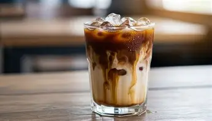
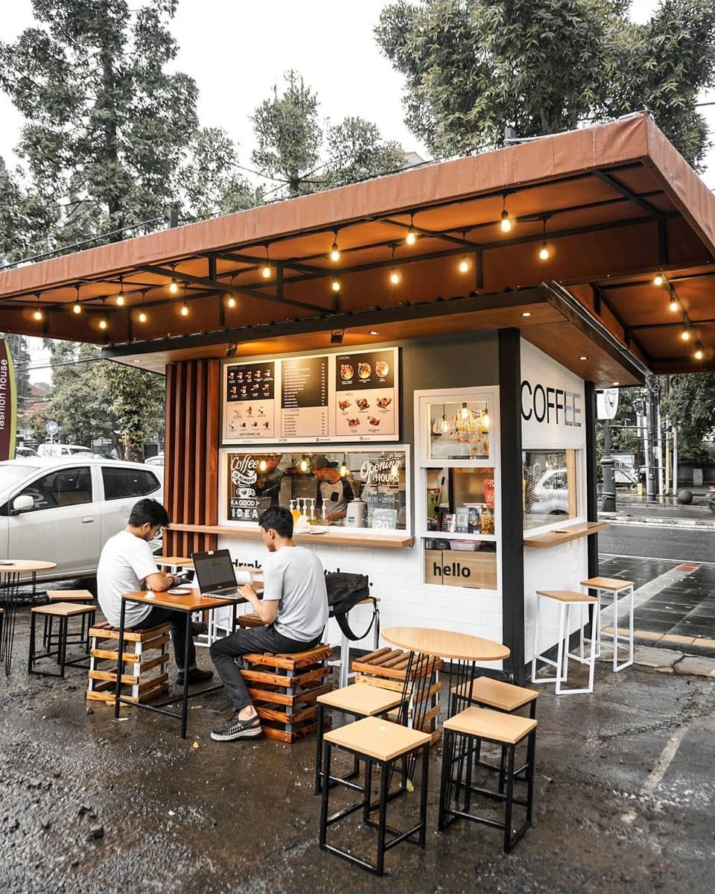

Es Kopi Susu Aren
Best SellerSignature espresso blend with creamy fresh milk and organic liquid palm sugar.
Bringing the rich heritage of Indonesian archipelago beans—from Gayo to Toraja—directly to your doorstep. Micro-roasted in small batches for premium freshness.

Klik pertanyaan untuk melihat jawabannya.
Ya. Kamu dapat melakukan pemesanan melalui menu Order Now atau menghubungi kami melalui kontak yang tersedia.
Kami menyediakan Es Kopi Susu Aren, Traditional Tubruk, dan Pandan Latte sebagai signature brews.
Untuk informasi menu non-kopi terbaru, silakan hubungi Kopi Nusantara melalui kontak yang tersedia.
Kopi Nusantara merupakan kedai kopi rumahan yang berbasis di Jakarta, Indonesia.